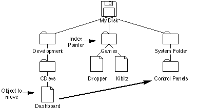
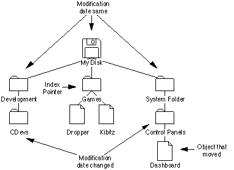
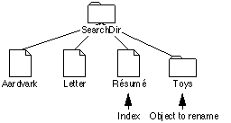
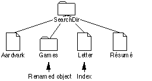

|
|
This Technical Note discusses the PBCatSearch function and tells why it should be used. It also provides simple algorithms for searching both MFSand HFS volumes and discusses the problems with indexed search routines.
This note includes information on PBCatSearch
and notes the problems with indexed search routines. Thanks to John Norstad at Northwestern University for pointing out some of the shortcomings of the indexed search routines. Thanks to the System 7 engineering team for adding PBCatSearch.
[Oct 01 1988]
|
Introduction
It may be necessary to search the volume hierarchy for files or directories
with specific characteristics. Generally speaking, your application should
avoid searching entire volumes because searching can be a very time-consuming
process on a large volume. Your application should rely instead on files being
in specific directories (the same directory as the application, or in one of
the system-related folders that can be found with FindFolder) or on
having the user find files with Standard File.
Back to top
Searching MFS Volumes
Under MFS, indexed calls to PBGetFInfo return information about all
files on a given volume. Under HFS, the same technique returns information only
about files in the current directory. Here's a short code snippet showing how
to use PBGetFInfo to list all files on an MFS volume:
PROCEDURE EnumMFS (theVRefNum: Integer);
{ search the MFS volume specified by theVRefNum }
VAR
pb: ParamBlockRec;
itemName: Str255;
index: Integer;
err: OSErr;
BEGIN
WITH pb DO
BEGIN
ioNamePtr := @itemName;
ioVRefNum := theVRefNum;
ioFVersNum := 0;
END;
index := 1;
REPEAT
pb.ioFDirIndex := index;
err := PBGetFInfoSync(@pb);
IF err = noErr THEN
BEGIN
{ do something useful with the file information in pb }
END;
index := index + 1;
UNTIL err <> noErr;
END;
|
As noted in Macintosh Technical Note #66,
a directory signature of $D2D7 means a volume is an MFS volume, while a directory signature
of $4244 means the volume is an HFS volume.
Back to top
Searching HFS Volumes
Fast, Reliable Searches Using PBCatSearch
The fastest and most reliable way to search an HFS volume's catalog is with the
File Manager's PBCatSearch function. PBCatSearch returns a
list of FSSpec records to files or directories that match the search
criteria specified by your application. However, PBCatSearch is not
available on all volumes or under all versions of the File Manager. Volumes
that support PBCatSearch can be identified using the
PBHGetVolParms function. (See the following code.) Versions of the
File Manager that support PBCatSearch can be identified with the
gestaltFSAttr Gestalt selector and gestaltFullExtFSDispatching
bit as shown in the following code:
FUNCTION HasCatSearch (vRefNum: Integer): Boolean;
{ See if volume specified by vRefNum supports PBCatSearch }
VAR
pb: HParamBlockRec;
infoBuffer: GetVolParmsInfoBuffer;
attrib: LongInt;
BEGIN
HasCatSearch := FALSE; { default to no PBCatSearch support }
IF GestaltAvailable THEN { See Inside Macintosh Volume VI, Chapter 3 }
IF Gestalt(gestaltFSAttr, attrib) = noErr THEN
IF BTst(attrib, gestaltFullExtFSDispatching) THEN
BEGIN { this version of the File Manager can call PBCatSearch }
WITH pb DO
BEGIN
ioNamePtr := NIL;
ioVRefNum := vRefNum;
ioBuffer := @infoBuffer;
ioReqCount := sizeof(infoBuffer);
END;
IF PBHGetVolParmsSync(@pb) = noErr THEN
IF BTST(infoBuffer.vMAttrib, bHasCatSearch) THEN
HasCatSearch := TRUE; { volume supports PBCatSearch }
END;
END;
|
|
Note:
File servers that support the AppleTalk Filing Protocol (AFP)
version 2.1 support PBCatSearch. That includes volumes and directories
shared by System 7 File Sharing and by the AppleShare 3.0 file server. Although
AFP version 2.1 supports PBCatSearch, the fsSBNegate bit is
not supported in the ioSearchBits field. Using PBCatSearch to
ask the file server to perform the search is usually faster than using the
recursive indexed search described in the next section.
|
PBCatSearch should be used if it is available because it is usually
much faster than a recursive search. For example, the search time for
finding all files and directories on a recent Developer CD was around 18
seconds with PBCatSearch. It took 6 minutes and 36 seconds with a
recursive indexed search. How long do you want the users of your application
to wait?
PBCatSearch can be used to collect a list of FSSpec records to
all items on a volume by setting ioSearchBits in the parameter block to 0.
Recursive Indexed Searches Using PBGetCatInfo
When PBCatSearch is not available, an application must resort to a
recursive indexed search. There are a couple of potential problems with a
recursive indexed search; a recursive indexed search can use up a lot of stack
space and the volume directory structure can change in the multi-user/multiprocess
Macintosh environment. The example code in this note addresses the stack space
problem, but for reasons explained later, does not address problems caused by
multiple users or processes changing the volume directory structure during a
recursive search.
The default stack space on the Macintosh can be as small as 8K; therefore, the
recursive indexed search example shown in this Note encloses the actual recursive
routine in a shell that can hold most of the variables needed, which dramatically
reduces the size of the stack frame. This example uses only 26 bytes of stack space
each time the routine recurses. That is, it could search 100 levels deep
(pretty unlikely) and use only 2600 bytes of stack space.
Please notice that when the routine comes back from recursing, it has to clear
the nonlocal variable err to noErr, since the reason the routine
came back from recursing is that PBGetCatInfo returned an error:
EnumerateCatalog(myCPB.ioDrDirID);
err := noErr; {clear error return on way back}
|
Please notice also that you must set myCPB.ioDrDirId each time you
call PBGetCatInfo, because if PBGetCatInfo gets information
about a file, it returns ioFlNum (the file number) in the same
location that ioDrDirID previously occupied.
Be sure to check bit 4, the fifth least significant bit, when you check the
file attributes bit to see if you've got a file or a folder. The following
routine uses MPW Pascal's BTST function to check that bit. If you use
the Toolbox bit manipulation routines (e.g., BitTst), remember to
order the bits in reverse order from standard 68000 notation.
Here is the routine in MPW Pascal:
PROCEDURE EnumerShell (vRefNumToSearch: Integer; { the vRefNum to search}
dirIDToSearch: LongInt); { the dirID to search }
VAR
itemName: Str63;
myCPB: CInfoPBRec;
err: OSErr;
{-----}
PROCEDURE EnumerateCatalog (dirIDToSearch: LongInt);
CONST
ioDirFlgBit = 4;
VAR
index: Integer;
BEGIN { EnumerateCatalog }
index := 1;
REPEAT
WITH myCBP DO
BEGIN
ioFDirIndex := index;
ioDrDirID := dirIDToSearch; { we need to do this every }
{ time through }
filler2 := 0; { Clear the ioACUser byte if search is }
{ interested in it. Nonserver volumes }
{ won't clear it for you and the value }
{ returned is meaningless. }
END;
err := PBGetCatInfo(@myCPB, FALSE);
IF err = noErr THEN
IF BTST(myCPB.ioFlAttrib, ioDirFlgBit) THEN
BEGIN { we have a directory }
{ do something useful with the directory information }
{ in myCPB }
EnumerateCatalog(myCPB.ioDrDirID);
err := noErr; {clear error return on way back}
END
ELSE
BEGIN { we have a file }
{ do something useful with the file information }
{ in myCPB }
END;
index := index + 1;
UNTIL (err <> noErr);
END; { EnumerateCatalog }
{-----}
BEGIN { EnumerShell }
WITH myCPB DO
BEGIN
ioNamePtr := @itemName;
ioVRefNum := vRefNumToSearch;
END;
EnumerateCatalog(dirIDToSearch);
END; { EnumerShell }
|
In MPW C:
/* the following variables are globals */
HFileInfo gMyCPB; /* for the PBGetCatInfo call */
Str63 gItemName; /* place to hold file name */
OSErr gErr; /* the usual */
/*---------------------------------------------------------------------*/
void EnumerateCatalog (long int dirIDToSearch)
{ /* EnumerateCatalog */
short int index=1;
do
{
gMyCPB.ioFDirIndex= index;
gMyCPB.ioDirID= dirIDToSearch; /* we need to do this every time */
/* through, since GetCatInfo */
/* returns ioFlNum in this field */
gMyCPB.filler2= 0; /* Clear the ioACUser byte if search is */
/* interested in it. Nonserver volumes won't */
/* clear it for you and the value returned is */
/* meaningless. */
gErr= PBGetCatInfo(&gMyCPB,false);
if (gErr == noErr)
{
if ((gMyCPB.ioFlAttrib & ioDirMask) != 0)
{ /* we have a directory */
/* do something useful with the directory information */
/* in gMyCPB */
EnumerateCatalog(gMyCPB.ioDirID); /* recurse */
gErr = noErr; /* clear error return on way back */
}
else
{ /* we have a file */
/* do something useful with the file information */
/* in gMyCPB */
}
}
++index;
} while (gErr == noErr);
} /* EnumerateCatalog */
/*---------------------------------------------------------------------*/
EnumerShell(short int vRefNumToSearch, long int dirIDToSearch)
{ /* EnumerShell */
gMyCPB.ioNamePtr = gItemName;
gMyCPB.ioVRefNum = vRefNumToSearch;
EnumerateCatalog(dirIDToSearch);
} /* EnumerShell */
|
Please make sure that you are running under HFS before you use this routine
(see Technical Note #66).
You can search the entire volume by specifying a starting directory ID of
fsRtDirID, the root directory constant. You can do partial searches of a
volume by specifying a starting directory ID other than fsRtDirID.
Back to top
Searching in a Multi-user/Multiprocess Environment
Volumes can be shared by multiple users accessing a file server or multiple
processes running on a single Macintosh. Each user or process with access to such
a shared volume may be able to make changes to the volume's catalog at any time.
Changes in a volume's catalog in the middle of a search can cause two problems:
- Files and directories renamed or moved by another user or process can be entirely missed or found multiple times by a search routine.
- A search routine can easily lose track of its position within the hierarchical directory structure when files or directories are created, deleted, or renamed by another user or process.
A volume searched with a single call to PBCatSearch ensures that all
parts of the volume are searched without another user or process changing the
volume's catalog. However, a single call to PBCatSearch may not be
possible or practical because of the number of matches you expect, or because
you may want to set a time limit on the search so that the user can cancel a
long search. PBCatSearch returns a catChangedErr (-1304) and
no matches when the catalog of a volume is changed by another user or process
in a way that might affect the current search. The search can be continued with
the CatPositionRec returned with the catChangedErr error, but
at the risk of missing catalog entries or finding duplicate catalog entries.
Things aren't so nice for search routines based on indexed File Manager calls.
The File Manager won't notify you when a volume's catalog has changed. In fact,
there are several ways the catalog can change that are very difficult to detect
and correct for. Since methods that attempt to resynchronize an indexed search
and find all catalog entries that might be missed or found multiple times when
the catalog changes do not work for all cases, those methods are not discussed
in this Technical Note. The following paragraphs describe why some changes are
very difficult to detect.
There are three changes you can make to the contents of a directory that change
the list of files and directories returned by an indexed search: creating,
deleting, and renaming. Directories of an HFS volume are always sorted
alphabetically, so when a file or subdirectory is deleted from a directory, any
directory entries after it bubbles up to fill the vacated entry position; when
a file or subdirectory is created, it is inserted into the list and all entries
after it bubbles down one position. When a file or subdirectory is renamed, it
is removed from its current position and moved into its alphabetically correct
position. The first two changes, creating and deleting, can be detected only at
the parent directory level. That's because a creation or deletion changes only
the modification date of the parent directory but not the modification date of
any of the parent directory's ancestors. Renaming a file or subdirectory does
not change the modification date of the file or subdirectory renamed or the
modification date its parent directory, but it does change the order of files
and subdirectories found by an indexed search.
With this in mind, here are a couple of examples that are very difficult to detect.
The first example shows a file, Dashboard, moved (by another user or process)
with PBCatMove from the CDevs subdirectory to the Control Panels
subdirectory. (See figures 1 and 2.) At the time of the move, the search
routine has just finished recursively looking through the Development directory
and is ready to recursively search the Games directory. After the move, two
directories, CDevs and Control Panels, have new modification dates but no
change is seen at the root directory of My Disk. There is nothing to
immediately tell the search routine something has changed (except for the
volume modification date which may or may not mean the directory structure has
changed), so the search will see Dashboard twice. If the move were in the
opposite direction, from Control Panels to CDevs, Dashboard would be missed by
the search routine.

Figure 1. Before Dashboard Is Moved With PBCatMove

Figure 2. After Dashboard Is Moved With PBCatMove
The second example (see Figures 3 and 4) shows a directory, Toys, renamed (by
another user or process) with PBHRename to Games. At the time of the
move, the search routine has seen the files Aardvark and Letter and is looking
at the third object in the directory, the file Résumé. After the
move, the index pointer is still pointing at the third object but now the third
object is the file Letter, a file that has already been seen by the search.
This change cannot be detected by looking at the parent directory's
modification date because PBHRename does not change any modification
dates. However, this change can be detected by checking to see if the index
pointer still points to the same file or directory. The search routine could
re-index through the directory to find the Résumé file again and
start searching from there, but what about the directory that was renamed? The
search routine either must miss it (and its contents) or it must repeat the
search of the entire directory to ensure nothing is missed.

Figure 3. Before Toys Is Renamed With PBHRename

Figure 4. After Toys Is Renamed to Games With PBHRename
As these examples show, a change during a search of a hierarchical directory
structure with indexed File Manager calls involves the risk of missing catalog
entries or finding duplicate catalog entries. If your application depends on
seeing all items on a volume at least once and only once, you should make the
users of your application aware of the problems associated with indexed
searches and suggest to them ways to make sure the volume's catalog is not
changed during the indexed search. Here's a good suggestion you could make to
the user: do not use other programs during the search. Other programs may
create, delete, or rename files during the search.
Back to top
Summary
You should always use PBCatSearch to search a volume if it is
available. If PBCatSearch isn't available and you must use an indexed
search, be aware that it is difficult to ensure that you do not miss some catalog
entries or see some catalog entries multiple times during your search.
Back to top
References
Inside Macintosh, Volume IV, The File Manager
Inside Macintosh, Volume V, File Manager Extensions in a Shared Environment
Inside Macintosh, Volume VI, The Finder Interface
Inside Macintosh, Volume VI, The File Manager
Technical Note M.FL.ActiveFS -- Determining Which File System Is Active
Technical Note M.FL.PBSharePBUnshare -- PBShare, PBUnshare, and PBGetUGEntry
Back to top
Downloadables
|

|
Acrobat version of this Note (188K)
|
Download
|
Back to top
|